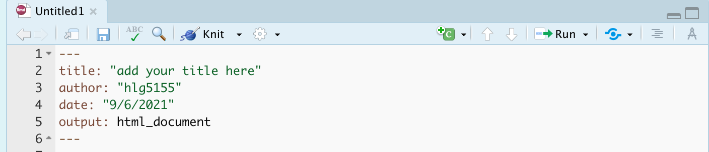

T4: Advanced Markdown
Adding photos
There are many ways to do this, with a FANTASTIC tutorial here if you get stuck:
Step 1:
Go find your picture. If it’s on the internet the easiest way is to right click on it and press “save as”, then save the jpeg or png directly into your project folder with an easy filename.
Step 2:
Place your picture/photo into your project folder (e.g. your Lab 3 project folder).
Step 3:
Make a new code chunk.
REMEMER TO ADD BLANK LINES ABOVE AND BELOW THE CODE CHUNK.
Step 4
Inside the code chunk, use the knitr::include_graphics() command from the knitr package.
You’ll see I also added some code chunk options:
- echo=FALSE : don’t show the code
- fig.align - ‘center’ : Centre align the photo when you press knit
- out.width - ‘60%’ : Make your photo smaller or larger on the page
- fig.cap - “your caption” : Add a caption (IN QUOTES). I used * to make mine italic.
If you run the code chunk by pressing the green arrow, you will see the picture, but not things like the caption.
Now press knit and you should see the picture, caption and options, but not the code (if echo=FALSE is included)
Example
For example, here’s an example on chipmunks. The chipmunk.webp file is inside my project folder. (note, the file type doesn’t matter but you have to type it)
Here’s how it looks in my .Rmd file.

and in the actual report:

For more options see the tutorial: http://zevross.com/blog/2017/06/19/tips-and-tricks-for-working-with-images-and-figures-in-r-markdown-documents/
Adding videos
If you wish to add a video from youtube, you will need to install a new package called vembedr. Follow Tutorial 2 to install this package and add it to your library code chunk and run that code chunk.
Now make a code chunk and use the embed_url command to embed a video of your choice from youtube/vimeo etc in your report. If you have issues, see teams.
YAML Code
Your YAML code is the code at the top of your file in between the — lines in the figure above. Let’s zoom in

Your YAML code controls how your final output looks and which type of output it becomes. For example, this could be a website (as for ours), a pdf, a presentation or app.. The basic version is very simple with a title, an author, a self entered date and that we just want a website.
Let’s add in more options.
YAML code is annoying to edit, because here, EXACT SPACES/SPELLINGS MATTER. Everything has to be perfect or it won’t knit.
Here is an example of what you could do, some of these might not work for your template
---
title: "STAT-462 TEMPLATE"
author: "hlg5155"
date: "`r Sys.Date()`"
output:
html_document:
toc: true
toc_depth: 3
toc_float:
collapsed: no
number_sections: yes
theme: lumen
df_print: paged
---The elements we just added are:
- The title
- The author (note,use your ID not your name)
- Automatically created today’s date
- A floating table of contents
- Numbered sections (this won’t appear until you start typing section headings)
- The document is now in the lumen theme. (you might have a different theme)
Troubleshooting YAML code
- Note, if you copy/paste this and it doesn’t work, sometimes the quote marks copy weirdly from the internet - try deleting and retyping the quotes.
- If it still doesn’t work.. this might be because a space is missing (especially if you typed it out).
- Editing YAML code can be a pain. It is very case and space sensitive.
For example, the spaces at the start of some lines are important and are created using the TAB KEY, not the space bar. There is one TAB key before html_notebook (which is now on a new line). There are two TAB KEYS before toc, toc_float, number_sections and theme.
- Editing YAML code can be a pain. It is very case and space sensitive.
Also try looking at the theme’s website e.g. google rmdformats add table of contents or similar.
Don’t continue until you can make and view your html when you press knit. If it doesn’t work, ask for help before moving on